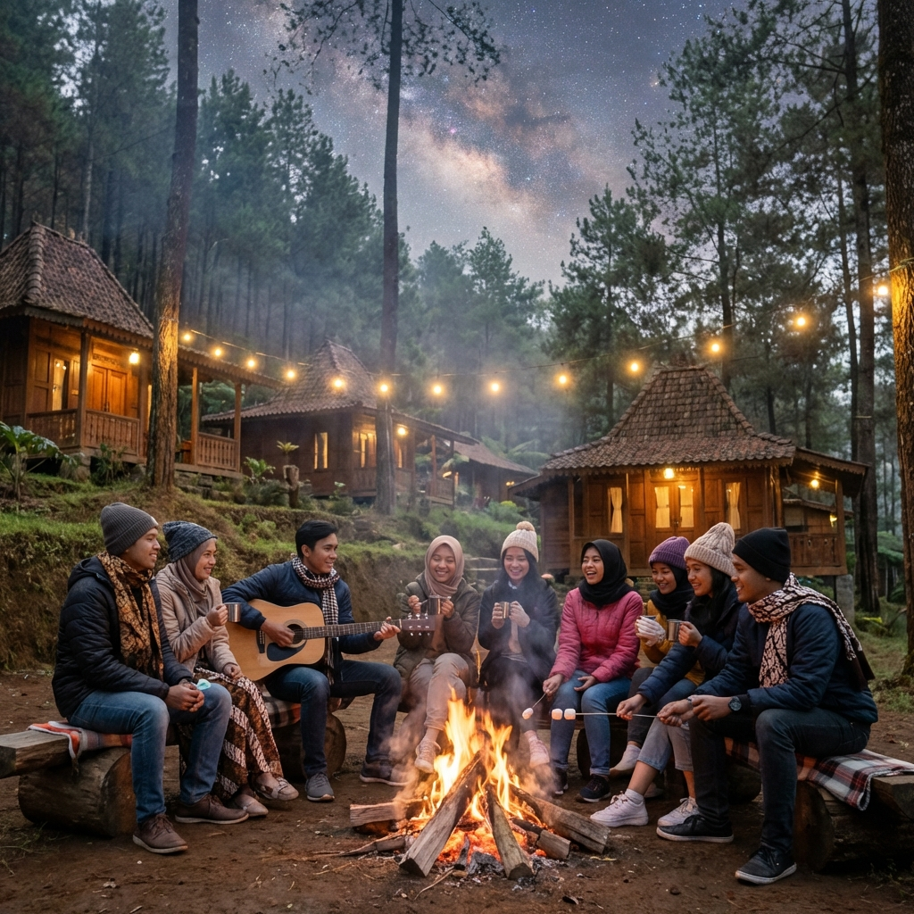
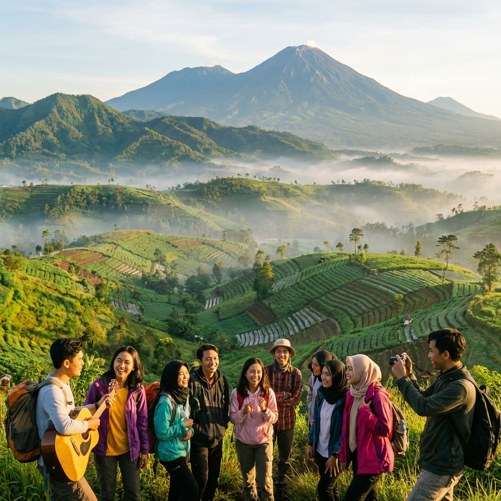
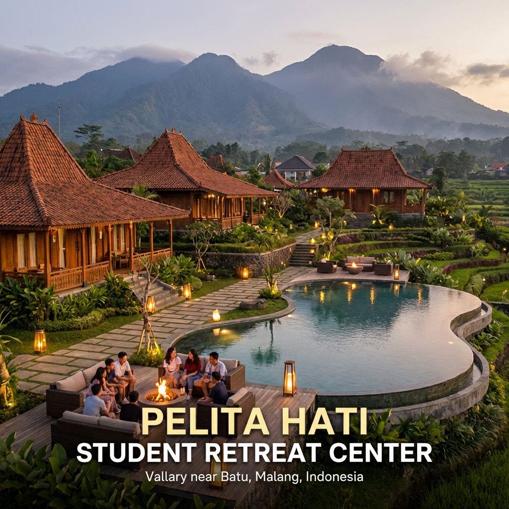

Suasana campfire yang seru dan berkesan di salah satu tempat makrab favorit di Batu Malang.
Memilih tempat makrab yang tepat bisa menjadi penentu sukses tidaknya keseluruhan acara malam keakraban. Tempat yang salah bisa membuat kegiatan terasa membosankan, tidak nyaman, atau bahkan berpotensi membahayakan peserta. Sebaliknya, tempat yang tepat akan membuat setiap momen makrab terasa istimewa dan berkesan untuk seluruh peserta. Oleh karena itu, panitia makrab perlu memperhatikan berbagai faktor sebelum menentukan lokasi.
Di Batu Malang, terdapat ratusan pilihan tempat yang bisa dijadikan lokasi makrab. Namun, tidak semua tempat cocok untuk setiap kelompok. Yang cocok untuk kelompok kecil 20 orang belum tentu ideal untuk kelompok besar 100 orang. Yang cocok untuk makrab dengan budget mahasiswa belum tentu sesuai dengan makrab organisasi profesional. Maka dari itu, tips-tips berikut akan membantu Anda memilih tempat makrab yang paling sesuai.
Faktor Utama dalam Memilih Tempat Makrab
Ada beberapa faktor krusial yang harus dipertimbangkan ketika memilih tempat makrab. Mengabaikan salah satu faktor ini bisa berakibat fatal pada kelancaran acara.
Keamanan dan Keselamatan Lokasi
Ini adalah faktor nomor satu yang tidak boleh dikompromikan. Tempat makrab harus memenuhi standar keselamatan dasar. Periksa apakah lokasi memiliki jalur evakuasi yang jelas, tidak berada di area rawan longsor atau banjir, memiliki penerangan yang cukup di malam hari, dan jauh dari tebing atau jurang yang berbahaya. Untuk kegiatan outdoor, pastikan area bermain relatif datar dan bebas dari batu-batu tajam atau lubang yang bisa menyebabkan cedera.
Jangan lupa untuk mengecek ketersediaan fasilitas kesehatan terdekat. Pastikan ada klinik atau rumah sakit yang bisa dijangkau dalam waktu 15-30 menit dari lokasi makrab. Selalu siapkan kotak P3K dan minimal satu orang yang terlatih pertolongan pertama. Faktor keselamatan ini sering diabaikan oleh panitia makrab yang fokus pada keseruan kegiatan semata.
Kapasitas dan Luas Area
Tempat makrab harus mampu menampung seluruh peserta dengan nyaman. Jangan memaksakan menyewa tempat yang terlalu kecil hanya karena harganya murah. Ketidaknyamanan akibat tempat yang sempit akan merusak seluruh pengalaman makrab. Sebagai patokan, setiap peserta idealnya membutuhkan minimal 4-5 meter persegi ruang bergerak untuk kegiatan outdoor.
Selain kapasitas penginapan, perhatikan juga luas area outdoor yang tersedia. Kegiatan outbound membutuhkan lapangan yang cukup luas — minimal berukuran lapangan futsal untuk kelompok 30-50 orang. Jika peserta lebih dari 50 orang, diperlukan area yang lebih besar atau bisa dibagi menjadi beberapa zona kegiatan.
"Kenyamanan peserta adalah investasi terbaik untuk keberhasilan makrab. Jangan pernah berkompromi dengan ruang dan kapasitas demi menghemat biaya." — Tim Gemilang Makrab

Pemandangan alam Batu Malang yang menjadi daya tarik utama sebagai lokasi makrab mahasiswa.
Aksesibilitas dan Jarak Tempuh
Pertimbangkan jarak dan aksesibilitas menuju lokasi makrab. Idealnya, lokasi makrab berjarak 1-3 jam perjalanan dari kampus. Terlalu dekat membuat makrab kurang terasa sebagai adventure, terlalu jauh membuat peserta kelelahan di perjalanan. Batu Malang sendiri memiliki posisi ideal — cukup dekat dari berbagai kota di Jawa Timur namun tetap memberikan suasana yang sangat berbeda dari kehidupan kampus sehari-hari.
Pastikan akses jalan menuju villa atau lokasi makrab cukup baik untuk kendaraan besar seperti bus pariwisata. Beberapa villa di kawasan pegunungan memiliki akses jalan yang sempit dan berkelok, yang mungkin sulit untuk bus besar. Jika menggunakan bus, pastikan untuk mengecek kondisi jalan terlebih dahulu atau pertimbangkan untuk menggunakan kendaraan yang lebih kecil dari titik tertentu.
Baca Juga
Tips Praktis Memilih Tempat Makrab
Lakukan Survey Lokasi Terlebih Dahulu
Jangan pernah booking tempat makrab tanpa survey lokasi terlebih dahulu. Survey sangat penting untuk memastikan kondisi tempat sesuai dengan ekspektasi dan foto-foto yang tersedia di internet. Selama survey, perhatikan kondisi bangunan, kebersihan, kelayakan fasilitas, luas area outdoor, kondisi jalan, signal telepon, dan ketersediaan air bersih.
Manfaatkan juga kesempatan survey untuk berbicara langsung dengan pemilik atau pengelola tempat. Tanyakan tentang aturan-aturan khusus, jam malam, kapasitas maksimal, dan fasilitas tambahan yang tersedia. Informasi langsung dari pengelola biasanya lebih akurat daripada informasi yang tersedia di internet atau brosur.
Baca Review dan Testimoni
Sebelum memutuskan, cari review dan testimoni dari kelompok-kelompok yang pernah makrab di tempat tersebut. Review dari sesama mahasiswa akan memberikan perspektif yang lebih relevan dibandingkan review wisatawan umum. Perhatikan review yang membahas tentang kebersihan, keamanan, responsivitas pengelola, dan kesesuaian fasilitas dengan yang dijanjikan.
Selain review online, Anda juga bisa bertanya kepada teman-teman dari kampus lain yang pernah makrab di Batu. Rekomendasi word-of-mouth dari sesama mahasiswa biasanya lebih bisa dipercaya dan memberikan insight yang lebih detail tentang pengalaman sebenarnya.
Periksa Kelengkapan Fasilitas
Buat checklist fasilitas yang Anda butuhkan dan cocokkan dengan fasilitas yang tersedia di tempat yang dipilih. Berikut checklist dasar yang bisa Anda gunakan:
- Kamar tidur — Cukup untuk semua peserta, dengan kasur/matras yang layak
- Kamar mandi — Air bersih mengalir, toilet berfungsi baik
- Ruang bersama/aula — Untuk kegiatan indoor dan kumpul bersama
- Halaman/lapangan — Area datar untuk outbound dan games
- Dapur — Peralatan masak, kompor, kulkas (jika perlu)
- Listrik — Stabil, minimal untuk lampu dan charging device
- Signal telepon — Setidaknya ada satu operator yang bisa di lokasi
- Parkir — Cukup untuk kendaraan peserta atau bus
- Area campfire — Spot aman untuk api unggun

Contoh villa makrab di Batu yang memiliki fasilitas lengkap termasuk kolam renang dan pemandangan gunung.
Kesalahan Umum Saat Memilih Tempat Makrab
Belajar dari kesalahan orang lain bisa menghemat banyak waktu dan uang. Berikut beberapa kesalahan umum yang sering dilakukan panitia makrab:
Tergiur Harga Murah Tanpa Cek Kualitas
Harga murah memang menarik, tapi jangan sampai kualitas dikorbankan. Villa dengan harga sangat murah mungkin memiliki fasilitas yang kurang memadai, kebersihan yang kurang terjaga, atau berada di lokasi yang sulit dijangkau. Selalu lakukan due diligence sebelum memutuskan — survey lokasi, cek review, dan tanyakan detail fasilitas. Lebih baik membayar sedikit lebih mahal untuk kenyamanan dan keamanan daripada menghemat tapi mengambil risiko.
Tidak Menyiapkan Plan B untuk Cuaca
Cuaca di pegunungan Batu bisa berubah-ubah dengan cepat. Bahkan di musim kemarau, hujan tiba-tiba bisa turun di sore atau malam hari. Panitia makrab wajib menyiapkan plan B berupa kegiatan indoor atau setidaknya tempat berteduh yang cukup besar jika hujan turun saat kegiatan outdoor berlangsung. Pilih tempat yang memiliki aula atau ruangan besar sebagai cadangan.
Booking Terlalu Mepet
Tempat-tempat makrab populer di Batu Malang bisa penuh dengan cepat, terutama di bulan-bulan tertentu seperti awal semester (Agustus-September) dan akhir tahun. Booking minimal 2-4 minggu sebelum hari H untuk mendapatkan tempat yang diinginkan dan harga terbaik. Booking mepet bisa membuat Anda terpaksa memilih tempat yang kurang ideal.
Rekomendasi Waktu Terbaik untuk Makrab di Batu
Timing bisa sangat mempengaruhi keberhasilan makrab. Berikut rekomendasi waktu terbaik untuk menyelenggarakan makrab di Batu Malang berdasarkan pengalaman kami:
- April - Juni: Cuaca cerah, udara sejuk, harga villa relatif normal. Cocok untuk makrab semester genap.
- Juli - Agustus: Musim kemarau puncak, cuaca paling stabil. Namun bertepatan dengan liburan sehingga harga villa bisa naik.
- September - Oktober: Awal semester ganjil, waktu ideal untuk makrab penerimaan anggota baru. Cuaca masih relatif cerah.
- November - Maret: Musim hujan, kurang ideal untuk kegiatan outdoor. Namun harga villa paling murah dan tempat lebih sepi.
"Makrab di musim kemarau memang ideal, tapi jangan underestimate makrab di musim hujan. Dengan persiapan plan B yang matang, makrab hujan-hujanan justru bisa menjadi kenangan paling berkesan!" — Pengalaman fasilitator Gemilang Makrab
Kesimpulan
Memilih tempat makrab yang seru di Batu Malang memerlukan pertimbangan yang matang dari berbagai aspek — keamanan, kapasitas, aksesibilitas, fasilitas, dan tentu saja budget. Dengan mengikuti tips-tips di atas, panitia makrab bisa lebih percaya diri dalam menentukan lokasi yang tepat untuk malam keakraban yang berkesan.
Ingat, tempat makrab yang baik adalah tempat yang aman, nyaman, dan mendukung terciptanya kebersamaan antar peserta. Jangan terlalu fokus pada estetika atau Instagram-worthy spot jika fasilitas dasarnya tidak memadai. Yang terpenting adalah semua peserta bisa menikmati setiap momen makrab tanpa hambatan.
Butuh bantuan memilih tempat makrab terbaik di Batu? Gemilang Makrab siap membantu! Dengan database tempat makrab terlengkap dan pengalaman melayani puluhan kampus, kami akan carikan tempat yang paling sesuai untuk kelompok Anda. Hubungi kami via WhatsApp sekarang!